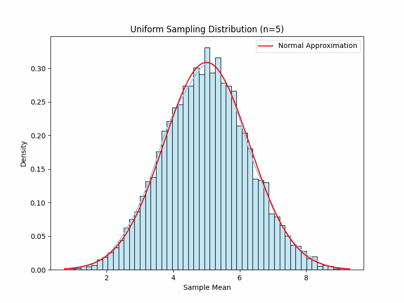
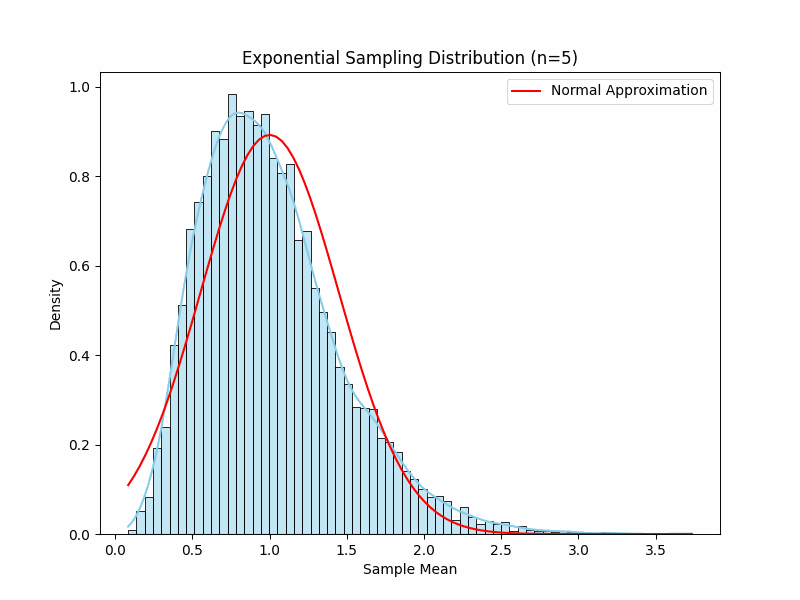
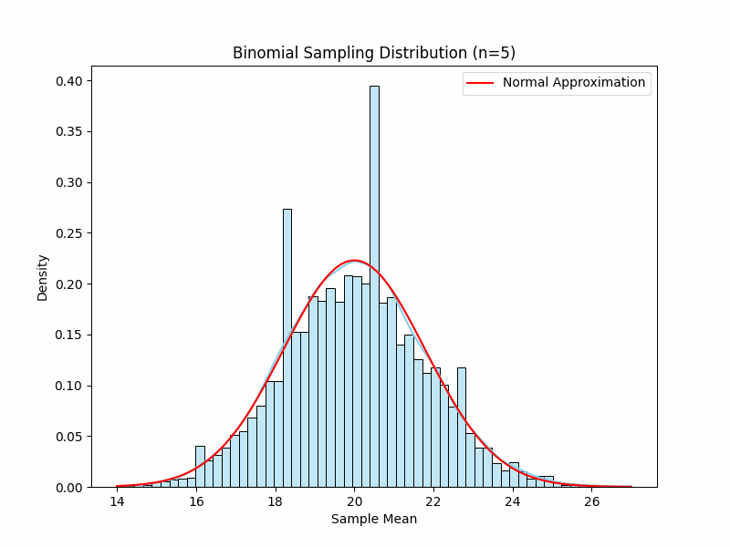

Problem 1
Central Limit Theorem Simulation
Overview
This project demonstrates the Central Limit Theorem (CLT) by simulating sampling distributions of the sample mean for three population distributions: uniform, exponential, and binomial. We visualize how these distributions approach normality as the sample size increases. Definitions Central Limit Theorem (CLT) For a population with mean \(\mu\) and variance \(\sigma^2\), the sampling distribution of the sample mean \(\bar{X}\) for samples of size \(n\) is approximately normal:\(\(\bar{X} \sim \mathcal{N}\left(\mu, \frac{\sigma^2}{n}\right) \text{ for large } n\)\) Sample Mean The average of a sample \(X_1, X_2, \ldots, X_n\):\(\(\bar{X} = \frac{1}{n} \sum_{i=1}^n X_i\)\) Population Variance Measures the spread of the population:\(\(\sigma^2 = E\left[(X - \mu)^2\right]\)\) Sampling Distribution Variance The variance of the sample mean:\(\(\text{Var}(\bar{X}) = \frac{\sigma^2}{n}\)\) Simulation Setup We simulate three population distributions: Uniform
Values: Between 0 and 10 Mean: \(\mu = 5\) Variance: \(\sigma^2 = \frac{(10-0)^2}{12} = 8.333\)
Exponential
Shape: Skewed, with rate parameter \(\lambda = 1\) Mean: \(\mu = \frac{1}{\lambda} = 1\) Variance: \(\sigma^2 = \frac{1}{\lambda^2} = 1\)
Binomial
Shape: Discrete, with trials \(n=100\), probability \(p=0.2\) Mean: \(\mu = np = 20\) Variance: \(\sigma^2 = np(1-p) = 16\)
Parameters
Sample sizes: \(n = 5, 10, 30, 50\) Number of samples: 10,000 Output: Each simulation generates histograms of sample means, compiled into a GIF showing the progression across sample sizes.
Python Code import numpy as np import matplotlib.pyplot as plt import seaborn as sns from PIL import Image import os
Set random seed for reproducibility np.random.seed(42)
Generate population distributions def generate_populations(size=100000): uniform = np.random.uniform(0, 10, size) exponential = np.random.exponential(1, size) binomial = np.random.binomial(100, 0.2, size) return [ (uniform, "Uniform", 5, np.sqrt(100/12)), (exponential, "Exponential", 1, 1), (binomial, "Binomial", 20, np.sqrt(16)) ]
Simulate sampling distribution of sample means def simulate_sampling_distribution(population, sample_size, num_samples=10000): sample_means = [np.mean(np.random.choice(population, sample_size)) for _ in range(num_samples)] return np.array(sample_means)
Plot histogram with normal approximation def plot_sampling_distribution(means, dist_name, sample_size, mu, sigma, frame_dir, frame_num): plt.figure(figsize=(8, 6)) sns.histplot(means, kde=True, stat="density", color="skyblue") plt.title(f"{dist_name} Sampling Distribution (n={sample_size})") plt.xlabel("Sample Mean") plt.ylabel("Density") # Overlay theoretical normal distribution x = np.linspace(min(means), max(means), 100) plt.plot(x, 1/(sigma/np.sqrt(sample_size) * np.sqrt(2np.pi)) * np.exp(-(x-mu)2 / (2(sigma/np.sqrt(sample_size))**2)), 'r-', label="Normal Approximation") plt.legend() plt.savefig(f"{frame_dir}/frame_{frame_num}.png") plt.close()
Create GIF for each distribution def create_gif(distributions, sample_sizes=[5, 10, 30, 50], num_samples=10000): for population, dist_name, mu, sigma in distributions: os.makedirs(dist_name, exist_ok=True) frame_num = 0 for n in sample_sizes: means = simulate_sampling_distribution(population, n, num_samples) plot_sampling_distribution(means, dist_name, n, mu, sigma, dist_name, frame_num) frame_num += 1 # Create GIF images = [Image.open(f"{dist_name}/frame_{i}.png") for i in range(len(sample_sizes))] images[0].save(f"{dist_name}.gif", save_all=True, append_images=images[1:], duration=1000, loop=0) print(f"Generated {dist_name}.gif")
Results The GIFs illustrate:
Uniform: Nearly normal at \(n=5\), with variance \(\frac{8.333}{n}\). Exponential: Skewed at \(n=5\), approaches normality by \(n=30\), centered at \(\mu=1\). Binomial: Near-normal even at \(n=5\), centered at \(\mu=20\), with variance \(\frac{16}{n}\).
Discussion
Shape: Skewed distributions (exponential) need larger \(n\) for normality than symmetric ones (uniform). Sample Size: Larger \(n\) reduces variance, tightening the distribution around \(\mu\). Variance: Higher population variance (uniform) widens the sampling distribution. Applications: Estimation: CLT supports confidence intervals for means. Quality Control: Monitors product consistency via sample means. Finance: Models aggregated returns as normal.
Conclusion The simulations confirm the CLT: sample means converge to a normal distribution as \(n\) increases. The GIFs visually demonstrate this for different distributions, highlighting the theorem’s importance in statistics.


